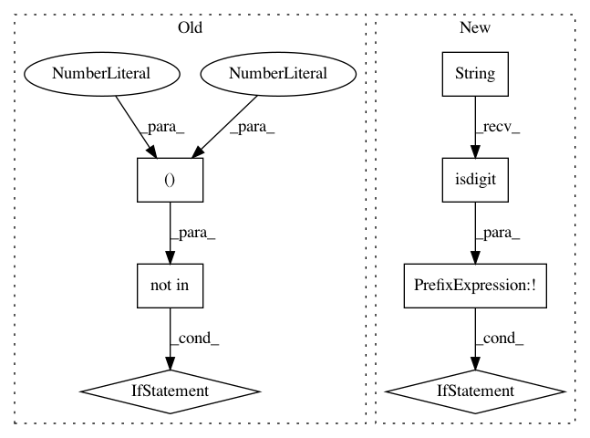

abe5d5444ef91f59c194622da3d5318565cfe1b7,pgmpy/models/DynamicBayesianNetwork.py,DynamicBayesianNetwork,get_interface_nodes,#DynamicBayesianNetwork#Any#,221
Before Change
>>> dbn.get_interface_nodes()
[("D", 0)]
if time_slice not in (0, 1):
raise ValueError("The timeslice should belong only to 0 or 1")
return [(edge[0][0], time_slice) for edge in self.get_inter_edges()]
def get_slice_nodes(self, time_slice=0):
After Change
>>> dbn.get_interface_nodes()
[("D", 0)]
if not str(time_slice).isdigit():
raise ValueError("The timeslice should be a positive value greater than or equal to zero")
return [(edge[0][0], time_slice) for edge in self.get_inter_edges()]
def get_slice_nodes(self, time_slice=0):
In pattern: SUPERPATTERN
Frequency: 3
Non-data size: 7
Instances
Project Name: pgmpy/pgmpy
Commit Name: abe5d5444ef91f59c194622da3d5318565cfe1b7
Time: 2015-07-28
Author: abhor902@gmail.com
File Name: pgmpy/models/DynamicBayesianNetwork.py
Class Name: DynamicBayesianNetwork
Method Name: get_interface_nodes
Project Name: pgmpy/pgmpy
Commit Name: abe5d5444ef91f59c194622da3d5318565cfe1b7
Time: 2015-07-28
Author: abhor902@gmail.com
File Name: pgmpy/models/DynamicBayesianNetwork.py
Class Name: DynamicBayesianNetwork
Method Name: get_slice_nodes
Project Name: pgmpy/pgmpy
Commit Name: abe5d5444ef91f59c194622da3d5318565cfe1b7
Time: 2015-07-28
Author: abhor902@gmail.com
File Name: pgmpy/models/DynamicBayesianNetwork.py
Class Name: DynamicBayesianNetwork
Method Name: get_intra_edges